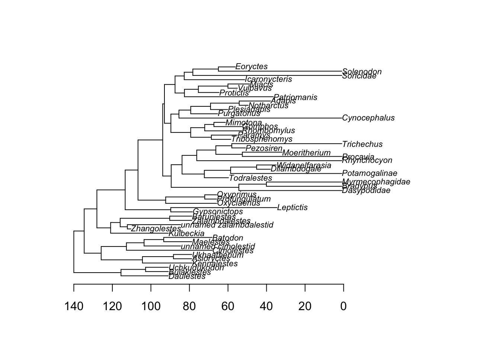
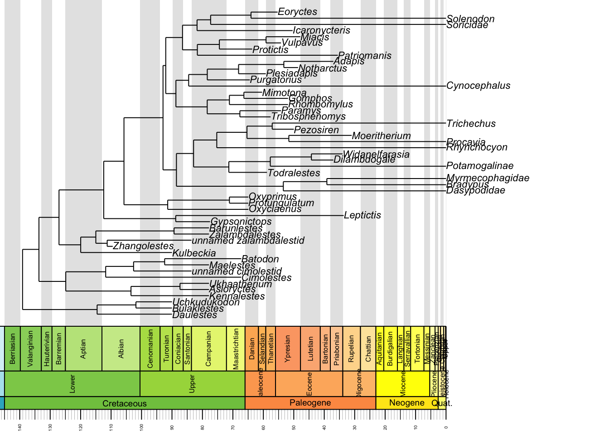
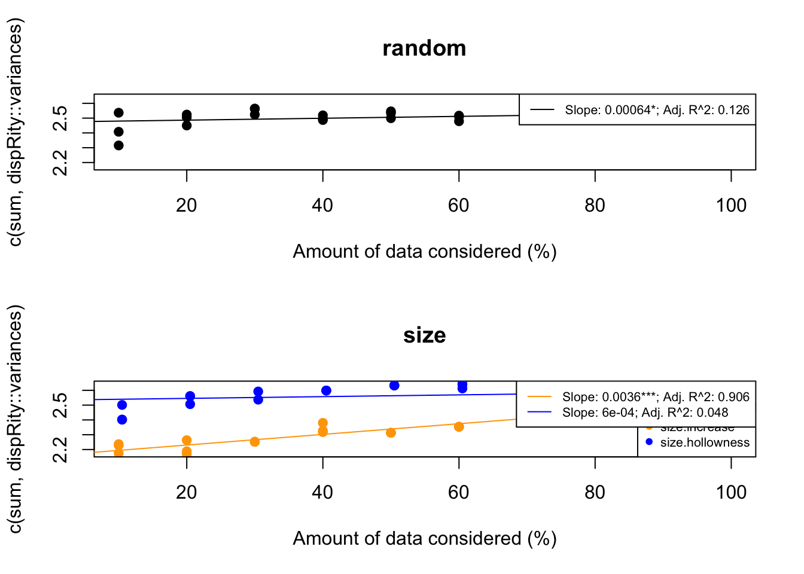
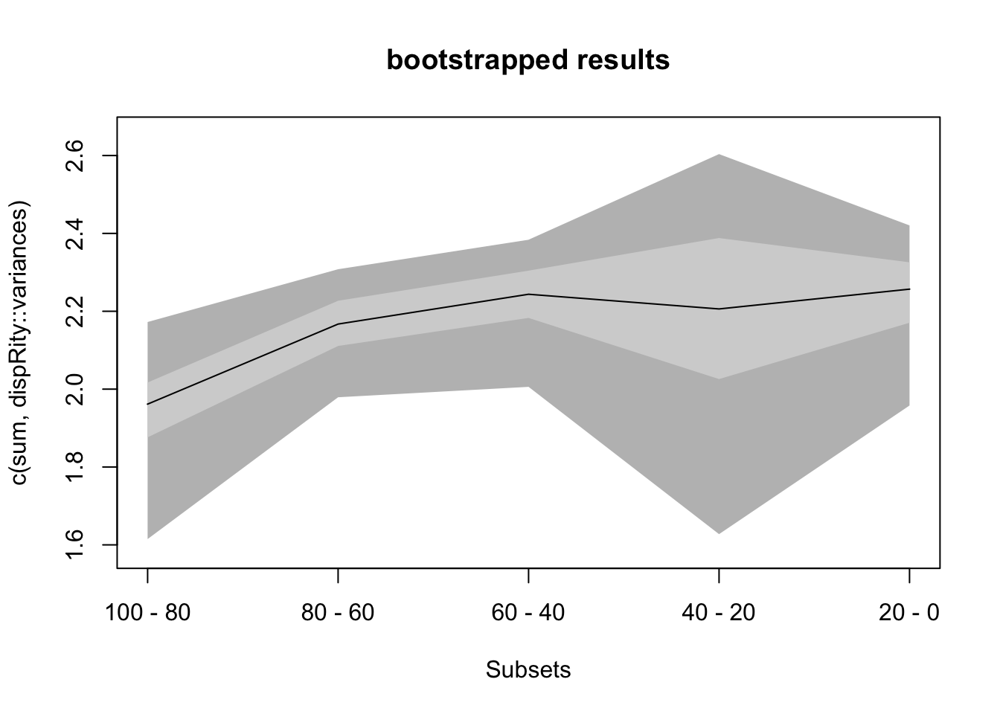
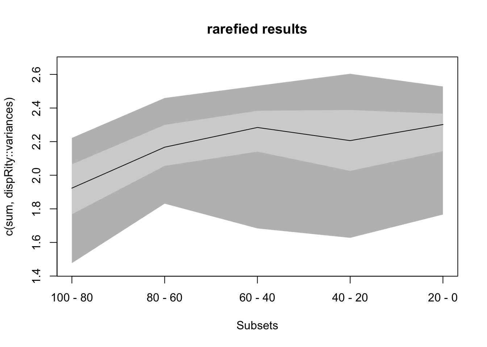

rm(list=ls())
if(length(c("dispRity")[!c("dispRity") %in% installed.packages()[,"Package"]]) > 0){
install.packages(c("dispRity")[!c("dispRity") %in% installed.packages()[,"Package"]])
}
library(dispRity)Loading required package: apeFor those of you who are comfortable manipulating objects in R, you can calculate pretty much any disparity metric using base R functions. However, doing so will often require you to transform objects in specific ways and extract specific elements of complex outputs, which can be a little daunting and/or confusing. Luckily, Thomas Guillerme of the University of Sheffield has put together a fantastic do-it-all package that let’s you conduct all sorts of disparity analyses. He has also spent considerable time writing a fantastic manual for the package, with plenty of examples (https://raw.githack.com/TGuillerme/dispRity/master/inst/gitbook/_book/index.html).
I have transcribed one such example below. Run through it, see what you think, then start playing around with the package.
Install and load dispRity.
rm(list=ls())
if(length(c("dispRity")[!c("dispRity") %in% installed.packages()[,"Package"]]) > 0){
install.packages(c("dispRity")[!c("dispRity") %in% installed.packages()[,"Package"]])
}
library(dispRity)Loading required package: apeFirst, we’ll set the seed for reproducibility, then load the datasets.
Today we’ll be working with a mammal dataset, specifically the ordination of a 50-taxon Gower distance matrix derived from discrete character data. We’ll load two versions: the first is solely composed of the loadings of the sampled taxa (BeckLee_mat50), the second (BeckLee_mat99) includes the loadings for each node in the phylogenetic tree that unites them. We’ll also load the phylogenetic tree used to estimate the node states and age data for some of the tips.
set.seed(123)
data(BeckLee_mat50)
data(BeckLee_mat99)
data(BeckLee_tree)
data(BeckLee_ages)You can check out the dimensions of the matrices using the dim function.
dim(BeckLee_mat50)[1] 50 48dim(BeckLee_mat99)[1] 99 97As expected, 50 rows (i.e., taxa) in BeckLee_mat50, and 99 in BeckLee_mat99.
We can also take a peak at the phylogeny. We can do this simply…
plot(BeckLee_tree, cex = 0.7)
axisPhylo(root = 140)
…and we can do it with a fancy geological time scale (using the strap package)!
if(!require(strap)) install.packages("strap")Loading required package: strapLoading required package: geoscalestrap::geoscalePhylo(BeckLee_tree, cex.tip = 0.7, cex.ts = 0.6)
If you want to use your own data, you can use any type of morphospace in any dataset form (“matrix”, “data.frame”). Throughout this tutorial, you we assume you are using the (loose) morphospace definition from Thomas Guillerme, Cooper, et al. (2020): any matrix were columns are traits and rows are observations (in a distance matrix, columns are still trait, i.e. “distance to species A”, etc.). We won’t cover it here but you can also use lists of matrices and list of trees.
To go through this tutorial you will need:
If you are missing any of these components, you can use the following functions to sample any of the missing components:
## Functions to get simulate a PCO looking like matrix from a tree
i.need.a.matrix <- function(tree) {
matrix <- space.maker(elements = Ntip(tree), dimensions = Ntip(tree), distribution = rnorm,
scree = rev(cumsum(rep(1/Ntip(tree), Ntip(tree)))))
rownames(matrix) <- tree$tip.label
return(matrix)
}
## Function to simulate a tree
i.need.a.tree <- function(matrix) {
tree <- rtree(nrow(matrix))
tree$root.time <- max(tree.age(tree)$age)
tree$tip.label <- rownames(matrix)
tree$node.label <- paste0("n", 1:(nrow(matrix)-1))
return(tree)
}
## Function to simulate some "node" data
i.need.node.data <- function(matrix, tree) {
matrix_node <- space.maker(elements = Nnode(tree), dimensions = ncol(matrix),
distribution = rnorm, scree = apply(matrix, 2, var))
if(!is.null(tree$node.label)) {
rownames(matrix_node) <- tree$node.label
} else {
rownames(matrix_node) <- paste0("n", 1:(nrow(matrix)-1))
}
return(rbind(matrix, matrix_node))
}
## Function to simulate some "FADLAD" data
i.need.FADLAD <- function(tree) {
tree_ages <- tree.age(tree)[1:Ntip(tree),]
return(data.frame(FAD = tree_ages[,1], LAD = tree_ages[,1], row.names = tree_ages[,2]))
}Once you’ve done that, simply rename your data objects as the Beck & Lee dataset is renamed below.
## A matrix with tip data
my_matrix <- BeckLee_mat50
## A phylogenetic tree
my_tree <- BeckLee_tree
## A matrix with tip and node data
my_tip_node_matrix <- BeckLee_mat99
## A table of first and last occurrences data (FADLAD)
my_fadlad <- BeckLee_agesOne of the crucial steps in disparity-through-time analysis is to split the full morphospace into smaller time subsets that contain the total number of morphologies at certain points in time (time-slicing) or during certain periods in time (time-binning). Basically, the full morphospace represents the total number of morphologies across all time and will be greater than any of the time subsets of the morphospace.
The dispRity package provides a chrono.subsets function that allows users to split the morphospace into time slices (using method = continuous) or into time bins (using method = discrete). In this example, we are going to split the morphospace into five equal time bins of 20 million years long from 100 million years ago to the present. We will also provide to the function a table containing the first and last occurrences dates for some fossils to take into account that some fossils might occur in several of our different time bins.
## Creating the vector of time bins ages
time_bins <- rev(seq(from = 0, to = 100, by = 20))
## Splitting the morphospace using the chrono.subsets function
binned_morphospace <- chrono.subsets(data = my_matrix, tree = my_tree,
method = "discrete", time = time_bins, inc.nodes = FALSE,
FADLAD = my_fadlad)The output object is a dispRity object (In brief, dispRity objects are lists of different elements (i.e. disparity results, morphospace time subsets, morphospace attributes, etc.) that display only a summary of the object when calling the object to avoiding filling the R console with superfluous output. It also allows easy plotting/summarising/analysing for repeatability down the line but we will not go into this right now.
For more on dispRity objects, see the manual: https://raw.githack.com/TGuillerme/dispRity/master/inst/gitbook/_book/the-guts-of-the-disprity-package.html#disprity-object
Let’s take a peek under the hood.
## Printing the class of the object
class(binned_morphospace)[1] "dispRity"## Printing the content of the object
str(binned_morphospace)List of 4
$ matrix :List of 1
..$ : num [1:50, 1:48] -0.561 -0.419 -0.834 -0.771 -0.832 ...
.. ..- attr(*, "dimnames")=List of 2
.. .. ..$ : chr [1:50] "Cimolestes" "Maelestes" "Batodon" "Bulaklestes" ...
.. .. ..$ : NULL
$ tree :Class "multiPhylo"
List of 1
..$ :List of 6
.. ..$ edge : int [1:98, 1:2] 51 52 52 53 53 51 54 55 56 56 ...
.. ..$ edge.length: num [1:98] 24.5 24.6 12.7 11.8 11.8 ...
.. ..$ Nnode : int 49
.. ..$ tip.label : chr [1:50] "Daulestes" "Bulaklestes" "Uchkudukodon" "Kennalestes" ...
.. ..$ node.labels: chr [1:49] "n1" "n2" "n3" "n4" ...
.. ..$ root.time : num 139
.. ..- attr(*, "class")= chr "phylo"
.. ..- attr(*, "order")= chr "cladewise"
$ call :List of 1
..$ subsets: Named chr [1:4] "discrete" "1" "1" "FALSE"
.. ..- attr(*, "names")= chr [1:4] "" "trees" "matrices" "bind"
$ subsets:List of 5
..$ 100 - 80:List of 1
.. ..$ elements: int [1:8, 1] 5 4 6 8 43 10 11 42
..$ 80 - 60 :List of 1
.. ..$ elements: int [1:15, 1] 7 8 9 1 2 3 12 13 14 44 ...
..$ 60 - 40 :List of 1
.. ..$ elements: int [1:13, 1] 41 49 24 25 26 27 28 21 22 19 ...
..$ 40 - 20 :List of 1
.. ..$ elements: int [1:6, 1] 15 39 40 35 23 47
..$ 20 - 0 :List of 1
.. ..$ elements: int [1:10, 1] 36 37 38 32 33 34 50 48 29 30
- attr(*, "class")= chr "dispRity"## Printing the names of each element of the object
names(binned_morphospace)[1] "matrix" "tree" "call" "subsets"## Printing the object as a dispRity class
binned_morphospace ---- dispRity object ----
5 discrete time subsets for 50 elements in one matrix with 1 phylogenetic tree
100 - 80, 80 - 60, 60 - 40, 40 - 20, 20 - 0.These objects will gradually contain more information when completing the following steps in the disparity-through-time analysis.
Once we obtain our different time subsets, we can bootstrap and rarefy them (i.e. pseudo-replicating the data). The bootstrapping allows us to make each subset more robust to outliers and the rarefaction allows us to compare subsets with the same number of taxa to remove sampling biases (i.e. more taxa in one subset than the others). The boot.matrix function bootstraps the dispRity object and the rarefaction option within performs rarefaction.
## Getting the minimum number of rows (i.e. taxa) in the time subsets
minimum_size <- min(size.subsets(binned_morphospace))
## Bootstrapping each time subset 100 times and rarefying them
rare_bin_morphospace <- boot.matrix(binned_morphospace, bootstraps = 100,
rarefaction = minimum_size)We can now calculate the disparity within each time subsets along with some confidence intervals generated by the pseudoreplication step above (bootstraps/rarefaction). Disparity can be calculated in many ways and this package allows users to come up with their own disparity metrics. For more details, please refer to the dispRity metric section (or directly use moms).
In this example, we are going to look at how the spread of the data in the morphospace through time. For that we are going to use the sum of the variance from each dimension of the morphospace in the morphospace. We highly recommend using a metric that makes sense for your specific analysis and for your specific dataset and not just because everyone uses it!
This is not a straightforward question but you can use the test.metric function to check your assumptions. Basically, what test.metric does is modify your morphospace using a null process of interest (e.g. changes in size) and checks whether your metric does indeed pick up that change. For example here, let see if the sum of variances picks up changes in size but not random changes:
my_test <- test.metric(my_matrix, metric = c(sum, dispRity::variances), shifts = c("random", "size"))
summary(my_test) 10% 20% 30% 40% 50% 60% 70% 80% 90% 100% slope
random 2.41 2.51 2.56 2.50 2.54 2.51 2.52 2.53 2.53 2.52 0.0006434981
size.increase 2.23 2.19 2.25 2.33 2.31 2.35 2.43 2.44 2.48 2.52 0.0036071419
size.hollowness 2.40 2.56 2.56 2.60 2.63 2.64 2.60 2.58 2.55 2.52 0.0006032204
p_value R^2(adj)
random 3.046683e-02 0.12638784
size.increase 4.009847e-16 0.90601561
size.hollowness 1.324664e-01 0.04783366plot(my_test)
We see that changes in the inner size (see Thomas Guillerme, Puttick, et al. (2020) for more details) is actually picked up by the sum of variances but not random changes or outer changes. Which is a good thing!
As you’ve noted, the sum of variances is defined in test.metric as c(sum, variances). This is a core bit of the dispRity package where you can define your own metric as a function or a set of functions. You can find more info about this in the dispRity metric section but in brief, the dispRity package considers metrics by their “dimensions” level which corresponds to what they output. For example, the function sum is a dimension level 1 function because no matter the input, it outputs a single value (the sum). Variances on the other hand is a dimension level 2 function because it will output the variance of each column in a matrix (an example of a dimensions level 3 would be the function var that outputs a matrix). The dispRity package always automatically sorts the dimensions levels: it will always run dimensions level 3 > dimensions level 2 > and dimensions level 1. In this case both c(sum, variances) and c(variances, sum) will result in actually running sum(variances(matrix)).
Anyways, let’s calculate the sum of variances on our bootstrapped and rarefied morphospaces:
## Calculating disparity for the bootstrapped and rarefied data
disparity <- dispRity(rare_bin_morphospace , metric = c(sum, dispRity::variances))To display the actual calculated scores, we need to summarise the disparity object using the S3 method summary that is applied to a dispRity object (see ?summary.dispRity for more details). By the way, as for any R package, you can refer to the help files for each individual function for more details.
## Summarising the disparity results
summary(disparity) subsets n obs bs.median 2.5% 25% 75% 97.5%
1 100 - 80 8 2.207 1.962 1.615 1.876 2.017 2.172
2 100 - 80 6 NA 1.923 1.477 1.768 2.065 2.222
3 80 - 60 15 2.315 2.167 1.979 2.111 2.227 2.308
4 80 - 60 6 NA 2.167 1.831 2.055 2.300 2.460
5 60 - 40 13 2.435 2.244 2.006 2.183 2.304 2.384
6 60 - 40 6 NA 2.284 1.683 2.140 2.383 2.532
7 40 - 20 6 2.604 2.206 1.628 2.026 2.388 2.604
8 20 - 0 10 2.491 2.257 1.958 2.170 2.326 2.421
9 20 - 0 6 NA 2.302 1.766 2.143 2.366 2.528The summary.dispRity function comes with many options on which values to calculate (central tendency and quantiles) and on how many digits to display. Refer to the function’s manual for more details.
It is sometimes easier to visualise the results in a plot than in a table. For that we can use the plot S3 function to plot the dispRity objects (see ?plot.dispRity for more details).
## Graphical options
quartz(width = 10, height = 5) ; par(mfrow = (c(1,2)), bty = "n")plot(disparity, type = "continuous", main = "bootstrapped results")
plot(disparity, type = "continuous", main = "rarefied results",
rarefaction = minimum_size)
Nice. The curves look pretty similar. Same as for the summary.dispRity function, check out the plot.dispRity manual for the many, many options available.
Finally, to draw some valid conclusions from these results, we can apply some statistical tests. We can test, for example, if mammalian disparity changed significantly through time over the last 100 million years. To do so, we can compare the means of each time-bin in a sequential manner to see whether the disparity in bin n is equal to the disparity in bin n+1, and whether this is in turn equal to the disparity in bin n+2, etc. Because our data is temporally autocorrelated (i.e. what happens in bin n+1 depends on what happened in bin n) and pseudoreplicated (i.e. each bootstrap draw creates non-independent time subsets because they are all based on the same time subsets), we apply a non-parametric mean comparison: the wilcox.test. Also, we need to apply a p-value correction (e.g. Bonferroni correction) to correct for multiple testing (see ?p.adjust for more details).
## Testing the differences between bins in the bootstrapped dataset.
test.dispRity(disparity, test = wilcox.test, comparison = "sequential",
correction = "bonferroni")[[1]]
statistic: W
100 - 80 : 80 - 60 730
80 - 60 : 60 - 40 2752
60 - 40 : 40 - 20 5461
40 - 20 : 20 - 0 4506
[[2]]
p.value
100 - 80 : 80 - 60 7.081171e-25
80 - 60 : 60 - 40 1.593988e-07
60 - 40 : 40 - 20 1.000000e+00
40 - 20 : 20 - 0 9.115502e-01## Testing the differences between bins in the rarefied dataset.
test.dispRity(disparity, test = wilcox.test, comparison = "sequential",
correction = "bonferroni", rarefaction = minimum_size)[[1]]
statistic: W
100 - 80 : 80 - 60 1518
80 - 60 : 60 - 40 3722
60 - 40 : 40 - 20 5676
40 - 20 : 20 - 0 4160
[[2]]
p.value
100 - 80 : 80 - 60 7.159537e-17
80 - 60 : 60 - 40 7.199018e-03
60 - 40 : 40 - 20 3.953488e-01
40 - 20 : 20 - 0 1.609754e-01Here our results show significant changes in disparity through time between all time bins (all p-values < 0.05). However, when looking at the rarefied results, there is no significant difference between the time bins in the Palaeogene (60-40 to 40-20 Mya), suggesting that the differences detected in the first test might just be due to the differences in number of taxa sampled (13 or 6 taxa) in each time bin.
Don’t stop there - there are plenty more analyses to play around with using dispRity. Have a browse of the manual: https://raw.githack.com/TGuillerme/dispRity/master/inst/gitbook/_book/index.html